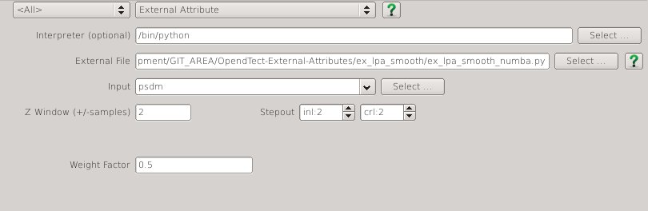

Script: ex_lpa_smooth.py
Description
This Python ExternalAttrib - External Attribute script can be used to filter noise while preserving steep dips. A region of data around each sample location is approximated by a second order 3D polynomial using gaussian weighted least squares.
The approximation has the following form:
$$ r_0+ r_1 * x + r_2 * y + r_3 * z + r_4 * x^2 + r_5 * y^2 + r_6 * z^2 +r_7 * x * y + r_8 * x * z + r_9 * y * z $$
where x (inline), y (crossline) and z (time/depth) are relative to the analysis location, ie the analysis location has x=y=z=0.
This attribute calculates and outputs only the $ r_0 $ term of the local polynomial approximation. This provides a smoother version of the input with relatively minor smearing of steep dips and fault cuts. Increasing either the Weight Factor or size of the analysis volume (StepOut or Z window) increases the amount of smoothing.
Examples

Input Parameters

| NAME | DESCRIPTION |
|---|---|
| Z window (+/-samples) | Specifies the extent of the analysis cube in the Z direction. Number of Z samples in cube will be $ 2 * Zwindow + 1 $. |
| Stepout | Specifies the inline and crossline extent of the analysis cube. Number of samples in each direction will be $ 2 * Stepout + 1 $. |
| Weight Factor | Determines the extent of the gaussian weight function used in the weighted least squares approximation. The standard deviation of the gaussian weight function ($ \sigma $) is related to this value by $$ \sigma = min(2*Stepout, 2*Zwindow) * WeightFactor $$ A value of 0.15 gives near zero weight for points at the smallest extent of the analysis cube. |